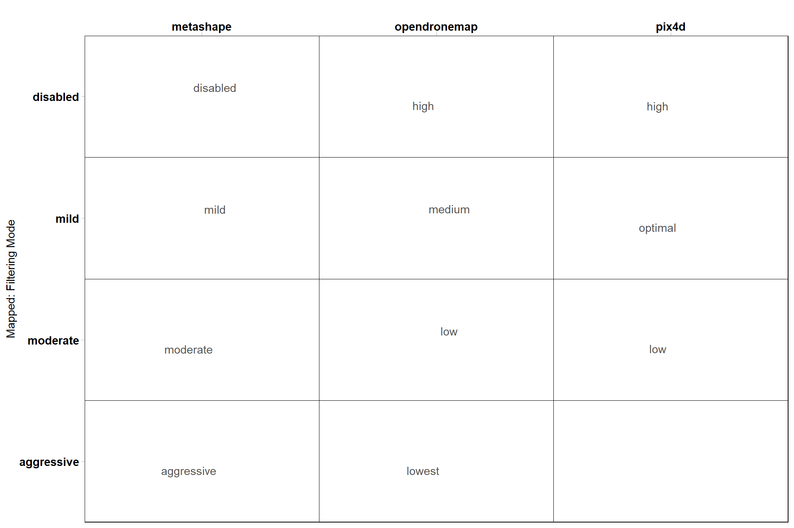
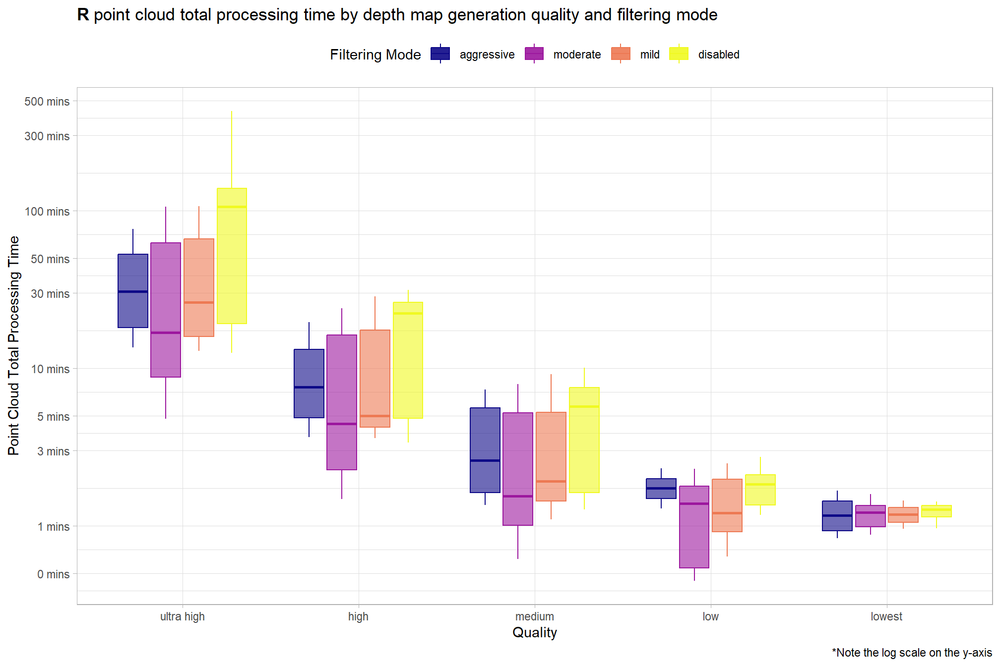
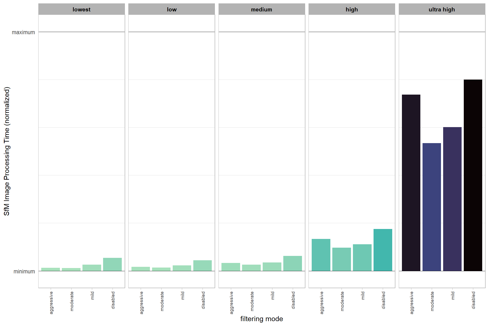

Section 3 R Point Cloud Processing
After running the UAS point cloud processing script in R…the processing tracking data file is used to compare summary statistics on point cloud processing times.
For comparison across software, the SfM point cloud generation processing parameters need are mapped to the Metashape parameters based on the Pix4D documentation and the Agisoft Metashape discussion board
### get tracking data
# read list of all processed tracking files
tracking_list_df =
dplyr::tibble(
file_full_path = list.files(
ptcld_processing_dir
, pattern = ".*_processed_tracking_data\\.csv$"
, full.names = T, recursive = T
) %>%
normalizePath()
) %>%
# get the software used
dplyr::mutate(
file_full_path %>%
toupper() %>%
stringr::str_extract_all(pattern = paste(toupper(software_list),collapse = "|"), simplify = T) %>%
dplyr::as_tibble() %>%
tidyr::unite(col = "software", sep = " ", na.rm = T)
) %>%
# filter processed tracking files
dplyr::mutate(
software = software %>% stringr::word(-1)
, study_site = file_full_path %>%
toupper() %>%
stringr::str_extract(pattern = paste(toupper(study_site_list),collapse = "|"))
, file_name = file_full_path %>%
basename() %>%
stringr::word(1, sep = fixed(".")) %>%
toupper() %>%
stringr::str_remove_all("_PROCESSED_TRACKING_DATA")
) %>%
dplyr::filter(
!is.na(study_site)
& study_site %in% toupper(study_site_list)
& !is.na(software)
& software %in% toupper(software_list)
) %>%
# keep only unique files for processing
dplyr::group_by(software, study_site, file_name) %>%
dplyr::filter(dplyr::row_number()==1) %>%
dplyr::ungroup() %>%
dplyr::rename(tracking_file_full_path = file_full_path)
# tracking_list_df %>% dplyr::glimpse()
# read each tracking data file, bind rows
ptcld_processing_data = 1:nrow(tracking_list_df) %>%
purrr::map(function(row_n){
tracking_list_df %>%
dplyr::filter(dplyr::row_number() == row_n) %>%
dplyr::bind_cols(
read.csv(tracking_list_df$tracking_file_full_path[row_n])
)
}) %>%
dplyr::bind_rows()
# ptcld_processing_data %>% dplyr::glimpse()
# split file name to get processing attributes
ptcld_processing_data =
ptcld_processing_data %>%
tidyr::separate_wider_delim(
cols = file_name
, delim = "_"
, names = paste0(
"processing_attribute"
, 1:(max(stringr::str_count(ptcld_processing_data$file_name, "_"))+1)
)
, too_few = "align_start"
, cols_remove = F
) %>%
# not sure how to map processing attributes for pix4d and opendronemap ??????????????
dplyr::mutate(
# temporary
qqq = dplyr::case_when(
tolower(software) == "pix4d" ~ processing_attribute2
, T ~ processing_attribute1
)
, fff = dplyr::case_when(
tolower(software) == "pix4d" ~ processing_attribute3
, T ~ processing_attribute2
)
# mapping
, depth_maps_generation_quality = dplyr::case_when(
tolower(qqq) %in% c("ultrahigh", "ultra", "original", "origianl") ~ "ultra high"
, tolower(qqq) %in% c("half") ~ "high"
, tolower(qqq) %in% c("quarter") ~ "medium"
, tolower(qqq) %in% c("eighth","eightht") ~ "low"
, T ~ tolower(qqq)
) %>%
factor(
ordered = TRUE
, levels = c(
"lowest"
, "low"
, "medium"
, "high"
, "ultra high"
)
) %>% forcats::fct_rev()
, depth_maps_generation_filtering_mode = dplyr::case_when(
tolower(fff) %in% c("high") &
tolower(software) %in% c("opendronemap") ~ "disabled"
, tolower(fff) %in% c("high")
& tolower(software) %in% c("pix4d") ~ "disabled"
, tolower(fff) %in% c("medium")
& tolower(software) %in% c("opendronemap") ~ "mild"
, tolower(fff) %in% c("optimal")
& tolower(software) %in% c("pix4d") ~ "mild"
, tolower(fff) %in% c("low")
& tolower(software) %in% c("opendronemap") ~ "moderate"
, tolower(fff) %in% c("low")
& tolower(software) %in% c("pix4d") ~ "moderate"
, tolower(fff) %in% c("lowest")
& tolower(software) %in% c("opendronemap") ~ "aggressive"
, T ~ tolower(fff)
) %>%
factor(
ordered = TRUE
, levels = c(
"disabled"
, "mild"
, "moderate"
, "aggressive"
)
) %>% forcats::fct_rev()
)what have we done?
## Rows: 500
## Columns: 33
## $ tracking_file_full_path <chr> "D:\\SfM_Software_Comparison\\Met…
## $ software <chr> "METASHAPE", "METASHAPE", "METASH…
## $ study_site <chr> "KAIBAB_HIGH", "KAIBAB_HIGH", "KA…
## $ processing_attribute1 <chr> "HIGH", "HIGH", "HIGH", "HIGH", "…
## $ processing_attribute2 <chr> "AGGRESSIVE", "DISABLED", "MILD",…
## $ processing_attribute3 <chr> NA, NA, NA, NA, NA, NA, NA, NA, N…
## $ file_name <chr> "HIGH_AGGRESSIVE", "HIGH_DISABLED…
## $ number_of_points <int> 52974294, 72549206, 69858217, 698…
## $ las_area_m2 <dbl> 86661.27, 87175.42, 86404.78, 864…
## $ timer_tile_time_mins <dbl> 0.63600698, 2.49318542, 0.8413380…
## $ timer_class_dtm_norm_chm_time_mins <dbl> 3.6559556, 5.3289152, 5.1638296, …
## $ timer_treels_time_mins <dbl> 8.9065272, 19.2119663, 12.3391793…
## $ timer_itd_time_mins <dbl> 0.02202115, 0.02449968, 0.0379844…
## $ timer_competition_time_mins <dbl> 0.10590740, 0.17865245, 0.1212486…
## $ timer_estdbh_time_mins <dbl> 0.02290262, 0.02382533, 0.0219917…
## $ timer_silv_time_mins <dbl> 0.012565533, 0.015940932, 0.01503…
## $ timer_total_time_mins <dbl> 13.361886, 27.276985, 18.540606, …
## $ sttng_input_las_dir <chr> "D:/Metashape_Testing_2024", "D:/…
## $ sttng_use_parallel_processing <lgl> FALSE, FALSE, FALSE, FALSE, FALSE…
## $ sttng_desired_chm_res <dbl> 0.25, 0.25, 0.25, 0.25, 0.25, 0.2…
## $ sttng_max_height_threshold_m <int> 60, 60, 60, 60, 60, 60, 60, 60, 6…
## $ sttng_minimum_tree_height_m <int> 2, 2, 2, 2, 2, 2, 2, 2, 2, 2, 2, …
## $ sttng_dbh_max_size_m <int> 2, 2, 2, 2, 2, 2, 2, 2, 2, 2, 2, …
## $ sttng_local_dbh_model <chr> "rf", "rf", "rf", "rf", "rf", "rf…
## $ sttng_user_supplied_epsg <lgl> NA, NA, NA, NA, NA, NA, NA, NA, N…
## $ sttng_accuracy_level <int> 2, 2, 2, 2, 2, 2, 2, 2, 2, 2, 2, …
## $ sttng_pts_m2_for_triangulation <int> 20, 20, 20, 20, 20, 20, 20, 20, 2…
## $ sttng_normalization_with <chr> "triangulation", "triangulation",…
## $ sttng_competition_buffer_m <int> 5, 5, 5, 5, 5, 5, 5, 5, 5, 5, 5, …
## $ qqq <chr> "HIGH", "HIGH", "HIGH", "HIGH", "…
## $ fff <chr> "AGGRESSIVE", "DISABLED", "MILD",…
## $ depth_maps_generation_quality <ord> high, high, high, high, low, low,…
## $ depth_maps_generation_filtering_mode <ord> aggressive, disabled, mild, moder…what is this mapping?
# quality
ptcld_processing_data %>%
dplyr::count(depth_maps_generation_quality, qqq, software) %>%
ggplot(aes(x = tolower(software), y = depth_maps_generation_quality, label = tolower(qqq))) +
geom_tile(fill = NA, color = "black") +
ggrepel::geom_text_repel(color = "gray33") +
labs(y = "Mapped: Depth Map Quality", x = "") +
scale_x_discrete(position = "top") +
coord_cartesian(expand = F) +
theme_light() +
theme(
panel.grid = element_blank()
, axis.text = element_text(size = 11, face = "bold", color = "black")
, panel.border = element_rect(color = "black")
)
# filtering
ptcld_processing_data %>%
dplyr::count(depth_maps_generation_filtering_mode, fff, software) %>%
ggplot(aes(x = tolower(software), y = depth_maps_generation_filtering_mode, label = tolower(fff))) +
geom_tile(fill = NA, color = "black") +
ggrepel::geom_text_repel(color = "gray33") +
labs(y = "Mapped: Filtering Mode", x = "") +
scale_x_discrete(position = "top") +
coord_cartesian(expand = F) +
theme_light() +
theme(
panel.grid = element_blank()
, axis.text = element_text(size = 11, face = "bold", color = "black")
, panel.border = element_rect(color = "black")
)
# !!!!!!!!!!!!!!!!!!!!!!!!!!!!!!!!!!!! Filtering
# !!!! keep only one kind of pix4d, all metashape and odm ???????
ptcld_processing_data = ptcld_processing_data %>%
dplyr::select(-c(qqq,fff)) %>%
dplyr::filter(
dplyr::case_when(
tolower(software) == "pix4d" & tolower(processing_attribute1) == "original" ~ T
, tolower(software) != "pix4d" ~ T
, T ~ F
) == T
)3.1 Number of files summary
ptcld_processing_data %>%
dplyr::count(software, depth_maps_generation_quality, depth_maps_generation_filtering_mode) %>%
ggplot(mapping = aes(
y = depth_maps_generation_quality
, x = depth_maps_generation_filtering_mode
, fill = n
, label = n
)) +
geom_tile(color = "white") +
geom_text(color = "white", size = 3) +
facet_grid(cols = vars(software)) +
scale_x_discrete(expand = c(0, 0)) +
scale_y_discrete(expand = c(0, 0)) +
scale_fill_viridis_c(option = "mako", direction=-1, begin = 0.2, end = 0.8) +
labs(
x = "filtering mode"
, y = "depth map quality"
, fill = "number of sites"
) +
theme_light() +
theme(
legend.position = "none"
, axis.text.x = element_text(angle = 90, vjust = 0.5, hjust = 1)
, panel.background = element_blank()
, panel.grid = element_blank()
, plot.subtitle = element_text(hjust = 0.5)
, strip.text = element_text(color = "black", face = "bold")
)
3.2 Processing Time Summary
Total processing time by depth map generation quality and depth map filtering mode
ptcld_processing_data %>%
ggplot(
mapping = aes(
x = depth_maps_generation_quality
, y = timer_total_time_mins
, color = depth_maps_generation_filtering_mode
, fill = depth_maps_generation_filtering_mode
)
) +
geom_boxplot(alpha = 0.6) +
scale_color_viridis_d(option = "plasma") +
scale_fill_viridis_d(option = "plasma") +
scale_y_log10(
labels = scales::comma_format(suffix = " mins", accuracy = 1)
, breaks = scales::breaks_log(n = 9)
) +
labs(
color = "Filtering Mode"
, fill = "Filtering Mode"
, y = "Point Cloud Total Processing Time"
, x = "Quality"
, title = bquote(
bold("R") ~
"point cloud total processing time by depth map generation quality and filtering mode"
)
, caption = "*Note the log scale on the y-axis"
) +
theme_light() +
theme(
legend.position = "top"
, legend.direction = "horizontal"
) +
guides(
color = guide_legend(override.aes = list(shape = 15, size = 6, alpha = 0.9))
)
Notice there are some outlier study sites in the point cloud processing time
ptcld_processing_data %>%
ggplot(
mapping = aes(
y = timer_total_time_mins
, x = depth_maps_generation_quality
, color = depth_maps_generation_filtering_mode
)
) +
geom_point(size = 3, alpha = 0.8) +
facet_grid(
cols = vars(study_site)
, labeller = label_wrap_gen(width = 35, multi_line = TRUE)
) +
scale_color_viridis_d(option = "plasma") +
scale_y_log10(
labels = scales::comma_format(suffix = " mins", accuracy = 1)
, breaks = scales::breaks_log(n = 9)
) +
labs(
color = "Filtering Mode"
, y = "Point Cloud Total Processing Time"
, x = "Quality"
, title = bquote(
bold("R") ~
"point cloud total processing time by depth map generation quality and filtering mode"
)
, subtitle = "by Study Site"
, caption = "*Note the log scale on the y-axis"
) +
theme_light() +
theme(
legend.position = "top"
, legend.direction = "horizontal"
, strip.text = element_text(color = "black", face = "bold")
, axis.text.x = element_text(angle = 90)
) +
guides(
color = guide_legend(override.aes = list(shape = 15, size = 6, alpha = 0.9))
)
3.3 Processing Time vs # Points
ptcld_processing_data %>%
ggplot(
mapping = aes(
x = number_of_points
, y = timer_total_time_mins
)
) +
geom_point(alpha = 0.7, color = "navy") +
scale_y_log10(
labels = scales::comma_format(suffix = " mins", accuracy = 1)
, breaks = scales::breaks_log(n = 9)
) +
scale_x_log10(
labels = scales::comma_format(suffix = " M", scale = 1e-6, accuracy = 1)
, breaks = scales::breaks_log(n = 6)
) +
labs(
y = "Point Cloud Total Processing Time"
, x = "Dense Point Cloud # Points"
, title = bquote(
bold("R") ~
"point cloud total processing time versus dense point cloud number of points"
)
, caption = "*Note the log scale on both axes"
) +
theme_light()
3.4 Processing Section Timing
ptcld_processing_data %>%
dplyr::select(
depth_maps_generation_quality
, tidyselect::ends_with("_mins")
) %>%
dplyr::select(-c(timer_total_time_mins)) %>%
tidyr::pivot_longer(
cols = -c(depth_maps_generation_quality)
, names_to = "section"
, values_to = "mins"
) %>%
# dplyr::count(depth_maps_generation_quality, section)
dplyr::group_by(depth_maps_generation_quality, section) %>%
dplyr::summarise(med_mins = median(mins)) %>%
dplyr::group_by(depth_maps_generation_quality) %>%
dplyr::mutate(
total_mins = sum(med_mins)
, pct_mins = med_mins/total_mins
) %>%
dplyr::ungroup() %>%
dplyr::mutate(
section = section %>%
stringr::str_remove_all("timer_") %>%
stringr::str_remove_all("_time_mins") %>%
factor(
ordered = T
, levels = c(
"tile"
, "class_dtm_norm_chm"
, "treels"
, "itd"
, "estdbh"
, "competition"
, "silv"
## olde
# "tile"
# , "denoise"
# , "classify"
# , "dtm"
# , "normalize"
# , "chm"
# , "treels"
# , "itd"
# , "estdbh"
# , "competition"
# , "silv"
)
, labels = c(
"Tile"
, "Classify+Denoise+DTM+Normalize+CHM"
, "TreeLS SfM DBH"
, "CHM I.T.D."
, "Local DBH Est."
, "Tree Competition"
, "Silvicultural Metrics"
)
) %>% forcats::fct_rev()
) %>%
ggplot(
mapping = aes(x = pct_mins, y = depth_maps_generation_quality, fill=section, group=section)
) +
geom_col(
width = 0.7, alpha=0.8
) +
geom_text(
mapping = aes(
label = scales::percent(ifelse(pct_mins>=0.06,pct_mins,NA), accuracy = 1)
, fontface = "bold"
)
, position = position_stack(vjust = 0.5)
, color = "black", size = 4
) +
scale_fill_viridis_d(option = "turbo", begin = 0.1, end = 0.9) +
scale_x_continuous(labels = scales::percent_format()) +
labs(
fill = "R script\nsection"
, y = "depth map quality"
, x = "% Point Cloud Total Processing Time"
, title = bquote(
bold("R") ~
"point cloud total processing time by depth map generation quality and R script section"
)
, subtitle = "Median across software, study site, & depth map filtering mode "
) +
theme_light() +
theme(
legend.position = "top"
, legend.direction = "horizontal"
, legend.title = element_text(size=7)
, axis.title.x = element_text(size=10, face = "bold")
, axis.title.y = element_text(size = 8)
, axis.text.x = element_blank()
, axis.text.y = element_text(color = "black",size=10, face = "bold")
, axis.ticks.x = element_blank()
) +
guides(
fill = guide_legend(nrow = 3, byrow = T, reverse = T, override.aes = list(alpha = 0.9))
) 
3.5 Summary of point cloud data
Use flight boundary to calculate the per ha metrics but all of the flight boundaries based on the SfM data are different ; so will just use the Metashape “high” quality area median across filtering modes applied to all.
3.5.1 Table
table_temp =
ptcld_processing_data %>%
dplyr::select(
# unique vars
software, tidyselect::starts_with("depth_maps"), study_site
# vars
, number_of_points, timer_total_time_mins
) %>%
# add area
dplyr::inner_join(
ptcld_processing_data %>%
dplyr::mutate(
las_area_m2 = dplyr::case_when(
tolower(software)=="metashape"
& tolower(depth_maps_generation_quality)=="high" ~ las_area_m2
, T ~ NA
)
) %>%
dplyr::group_by(study_site) %>%
dplyr::summarise(las_area_m2 = median(las_area_m2, na.rm = T))
, by = "study_site"
) %>%
# calculate per area metrics
dplyr::mutate(
number_of_points_m2 = number_of_points/las_area_m2
, timer_total_time_mins_ha = timer_total_time_mins/(las_area_m2/10000)
) %>%
# summary
dplyr::rename_with(
.fn = function(x){
x %>%
stringr::str_replace_all("depth_maps_generation_quality", "quality") %>%
stringr::str_replace_all("depth_maps_generation_filtering_mode", "filtering")
}
) %>%
# plot it?
# ggplot(mapping = aes(fill = software)) +
# geom_boxplot(mapping = aes(x = software, y = timer_total_time_mins_ha)) +
# facet_wrap(facets = vars(quality, filtering), ncol = 10) +
# scale_fill_viridis_d(option = "rocket", begin = 0.3, end = 0.9, drop = F) +
# scale_y_log10(
# labels = scales::comma_format(suffix = " mins", accuracy = 0.1)
# , breaks = scales::breaks_log(n = 9)
# ) +
# theme_light()
# or table it
dplyr::group_by(software, quality, filtering) %>%
dplyr::summarise(
dplyr::across(
c(number_of_points_m2, timer_total_time_mins_ha)
, .fns = list(mean = mean, sd = sd)
)
, n = dplyr::n()
) %>%
# combine mean/sd
dplyr::mutate(
pts = paste0(
number_of_points_m2_mean %>%
round(1) %>%
scales::comma(accuracy = 1)
, "<br>("
, number_of_points_m2_sd %>%
round(1) %>%
scales::comma(accuracy = 1)
, ")"
)
, mins = paste0(
timer_total_time_mins_ha_mean %>% round(1) %>% scales::comma(accuracy = 0.1)
, "<br>("
, timer_total_time_mins_ha_sd %>% round(1) %>% scales::comma(accuracy = 0.1)
, ")"
)
) %>%
dplyr::ungroup() %>%
select(software,quality,filtering,pts,mins)
table_temp =
dplyr::bind_rows(
table_temp %>% dplyr::select(-c(mins)) %>% tidyr::pivot_wider(names_from = filtering, values_from = pts) %>%
dplyr::mutate(metric = "Points m<sup>-2</sup>")
, table_temp %>% dplyr::select(-c(pts)) %>% tidyr::pivot_wider(names_from = filtering, values_from = mins) %>%
dplyr::mutate(metric = "Processing time<br>mins ha<sup>-1</sup>")
) %>%
dplyr::relocate(software) %>%
dplyr::relocate(metric)
# table
table_temp %>%
kableExtra::kbl(escape = F) %>%
kableExtra::kable_styling() %>%
kableExtra::collapse_rows(columns = 1:2, valign = "top")| metric | software | quality | aggressive | moderate | mild | disabled |
|---|---|---|---|---|---|---|
| Points m-2 | METASHAPE | ultra high |
3,546 (1,444) |
4,446 (1,687) |
4,544 (1,801) |
4,597 (1,786) |
| high |
789 (296) |
972 (345) |
1,019 (378) |
1,028 (377) |
||
| medium |
183 (64) |
224 (76) |
238 (84) |
239 (84) |
||
| low |
43 (13) |
52 (17) |
57 (19) |
57 (20) |
||
| lowest |
11 (3) |
12 (4) |
13 (4) |
13 (4) |
||
| OPENDRONEMAP | ultra high |
1,684 (664) |
1,678 (603) |
1,557 (515) |
1,455 (566) |
|
| high |
421 (125) |
421 (128) |
418 (134) |
418 (133) |
||
| medium |
100 (32) |
100 (32) |
99 (33) |
100 (34) |
||
| low |
99 (32) |
100 (33) |
99 (33) |
100 (33) |
||
| lowest |
99 (31) |
100 (33) |
100 (32) |
99 (33) |
||
| PIX4D | ultra high | NA |
262 (84) |
934 (317) |
3,454 (1,185) |
|
| high | NA |
58 (24) |
217 (90) |
774 (318) |
||
| medium | NA |
14 (4) |
54 (16) |
193 (60) |
||
| low | NA |
4 (1) |
13 (4) |
47 (14) |
||
|
Processing time mins ha-1 |
METASHAPE | ultra high |
9.1 (4.4) |
13.3 (6.1) |
14.0 (6.2) |
17.5 (8.2) |
| high |
2.2 (0.8) |
2.9 (0.9) |
3.2 (1.2) |
4.3 (1.2) |
||
| medium |
0.9 (0.3) |
1.0 (0.3) |
1.0 (0.4) |
1.3 (0.4) |
||
| low |
0.3 (0.1) |
0.3 (0.1) |
0.3 (0.1) |
0.4 (0.1) |
||
| lowest |
0.1 (0.0) |
0.2 (0.0) |
0.2 (0.0) |
0.2 (0.0) |
||
| OPENDRONEMAP | ultra high |
2.8 (1.1) |
2.7 (1.0) |
2.4 (0.7) |
2.4 (0.9) |
|
| high |
0.7 (0.2) |
0.7 (0.2) |
0.7 (0.2) |
0.6 (0.2) |
||
| medium |
0.2 (0.1) |
0.2 (0.1) |
0.2 (0.1) |
0.2 (0.1) |
||
| low |
0.2 (0.1) |
0.2 (0.1) |
0.2 (0.1) |
0.2 (0.0) |
||
| lowest |
0.2 (0.1) |
0.2 (0.1) |
0.2 (0.1) |
0.2 (0.0) |
||
| PIX4D | ultra high | NA |
1.1 (0.4) |
3.8 (1.7) |
42.1 (31.0) |
|
| high | NA |
0.3 (0.1) |
0.9 (0.5) |
3.5 (1.6) |
||
| medium | NA |
0.1 (0.0) |
0.3 (0.1) |
0.8 (0.3) |
||
| low | NA |
0.1 (0.0) |
0.1 (0.0) |
0.3 (0.1) |
3.5.2 Plot summary
table_temp = ptcld_processing_data %>%
dplyr::select(
# unique vars
software, tidyselect::starts_with("depth_maps"), study_site
# vars
, number_of_points, timer_total_time_mins
) %>%
# add area
dplyr::inner_join(
ptcld_processing_data %>%
dplyr::mutate(
las_area_m2 = dplyr::case_when(
tolower(software)=="metashape"
& tolower(depth_maps_generation_quality)=="high" ~ las_area_m2
, T ~ NA
)
) %>%
dplyr::group_by(study_site) %>%
dplyr::summarise(las_area_m2 = median(las_area_m2, na.rm = T))
, by = "study_site"
) %>%
# calculate per area metrics
dplyr::mutate(
number_of_points_m2 = number_of_points/las_area_m2
, timer_total_time_mins_ha = timer_total_time_mins/(las_area_m2/10000)
) %>%
# summary
dplyr::rename_with(
.fn = function(x){
x %>%
stringr::str_replace_all("depth_maps_generation_quality", "quality") %>%
stringr::str_replace_all("depth_maps_generation_filtering_mode", "filtering")
}
)
# plot it?
p1_temp =
table_temp %>%
dplyr::mutate(quality = forcats::fct_rev(quality)) %>%
ggplot(mapping = aes(x = filtering, y = timer_total_time_mins_ha, fill = software)) +
geom_point(
mapping = aes(group=software, color = software)
, position = position_nudge(x = -0.4)
, alpha = 0.8
, shape = "-", size = 5
) +
geom_boxplot(
width = 0.7, alpha = 0.8
, position = position_dodge2(preserve = "single")
, outliers = F
) +
# set vertical lines between x groups
geom_vline(xintercept = seq(0.5, length(table_temp$filtering), by = 1), color="gray22", lwd=.5) +
facet_grid(cols = vars(quality)) +
scale_fill_viridis_d(option = "rocket", begin = 0.3, end = 0.9, drop = F) +
scale_color_viridis_d(option = "rocket", begin = 0.3, end = 0.9, drop = F) +
scale_y_log10(
labels = scales::comma_format(suffix = " mins", accuracy = 0.1)
, breaks = scales::breaks_log(n = 9)
) +
labs(
subtitle = "quality"
, y = latex2exp::TeX("Processing time (mins $\\cdot ha^{-1}$)")
) +
theme_light() +
theme(
legend.position = "bottom"
, legend.direction = "horizontal"
, panel.grid.major.x = element_blank()
, panel.grid.minor.x = element_blank()
, axis.text.x = element_text(angle = 90, vjust = 0.5, hjust = 1, size = 7)
, strip.text = element_text(color = "black", face = "bold")
, plot.subtitle = element_text(hjust = 0.5)
) +
guides(
fill = guide_legend(reverse = T, override.aes = list(alpha = 1, color = NA, shape = NA, lwd = NA))
, color = "none"
)
# plot it?
p2_temp =
table_temp %>%
dplyr::mutate(quality = forcats::fct_rev(quality)) %>%
ggplot(mapping = aes(x = filtering, y = number_of_points_m2, fill = software)) +
geom_point(
mapping = aes(group=software, color = software)
, position = position_nudge(x = -0.4)
, alpha = 0.8
, shape = "-", size = 5
) +
geom_boxplot(
width = 0.7, alpha = 0.8
, position = position_dodge2(preserve = "single")
, outliers = F
) +
# set vertical lines between x groups
geom_vline(xintercept = seq(0.5, length(table_temp$filtering), by = 1), color="gray22", lwd=.5) +
facet_grid(cols = vars(quality)) +
scale_fill_viridis_d(option = "rocket", begin = 0.3, end = 0.9, drop = F) +
scale_color_viridis_d(option = "rocket", begin = 0.3, end = 0.9, drop = F) +
scale_y_log10(
labels = scales::comma_format(accuracy = 1)
, breaks = scales::breaks_log(n = 9)
) +
labs(
subtitle = "quality"
, y = latex2exp::TeX("Point density (points $\\cdot m^{2}$)")
) +
theme_light() +
theme(
legend.position = "bottom"
, legend.direction = "horizontal"
, panel.grid.major.x = element_blank()
, panel.grid.minor.x = element_blank()
, axis.text.x = element_text(angle = 90, vjust = 0.5, hjust = 1, size = 7)
, strip.text = element_text(color = "black", face = "bold")
, plot.subtitle = element_text(hjust = 0.5)
) +
guides(
fill = guide_legend(reverse = T, override.aes = list(alpha = 1, color = NA, shape = NA, lwd = NA))
, color = "none"
)
# combine plots
p2_temp / p1_temp + patchwork::plot_layout(guides = "collect") & theme(legend.position = "bottom")